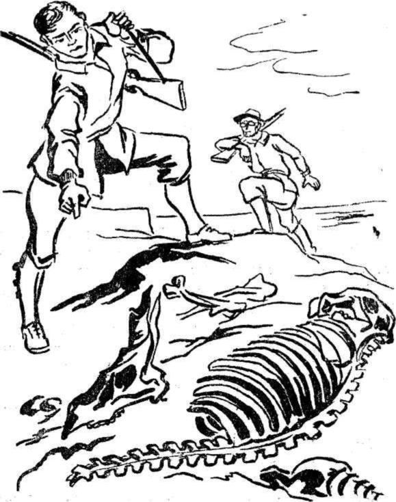

İlkönce hiçbir şey göremedim. Gözlerim kuvvetli ışığa alışık olmadığı için, birdenbire kapandılar. Tekrar açtığım zaman, hayret ve hayranlık içinde kaldım ve:
- Deniz! diye bağırdım. Dayım:
- Evet, dedi. Lidenbrock denizi. Bunu ilk olarak keşfetmiş olmakla övünebilirim.
Geniş bir su yığını göz alabildiğine uzanıyordu. Bu bir göl veya deniz olabilirdi. Büyük bir körfezin dibinde bulunuyorduk. Sahil, ince bir kumla kaplıydı. Dalgalar, rengârenk deniz kabuklarıyla bezenmiş kumsala çarpıp, eriyordu. Havaya sıçrayan su zerreleri, hafif bir rüzgârın tesiriyle etrafa savruluyordu. Bunlardan bazılarının ıslak temasım yüzümde bile hissettim.. Yarım kilometre uzakta sıralanan muazzam kayalar, tabiî bir mendirek meydana getiriyorlardı. Bu kayalardan bazıları yan yana gelerek, denizin ortasına doğru ufak bir yarımada gibi uzanıyorlardı. Vahşî görünüşlü, ıssız bir sahilde bulunuyorduk, önümüzde uzanan su kitlesi ise, hakikî bir okyanustu.
Mahiyetini izah edemeyeceğim bir ışık sayesinde etrafımı ve denizin en uzak noktalarını dahi mükemmelen görebiliyordum. Bu aydınlık ve güneşin hayat verici ışıklarına, ne de kutbun aylarca devam eden alaca karanlık gündüzlerine benziyordu. Bu, sıcaklığı olmayan, sert ve parlak bir ışıktı. Herhalde bunun menşei, izah edemeyeceğimiz bir elektrik olayına dayanıyordu. Bir okyanusu içine alabilecek kadar kocaman olan bir mağarada bir kozmik olay meydan geliyordu.
Gök, yani bu muazzam mağaranın kubbesi, bulutlardan yapılmış gibi görünüyordu. Aslında bunlar, mütemadiyen hareket halinde olan bu buharıydı. Bu bulutlar da su zerrelerinin çoğalıp, ağırlaşmasıyla bazı günlerde afet şeklinde yağmur yağması gayet tabiidir. Bildiğim fizik kanunlarına göre, bu kadar büyük basınç altında suyun buharlaşmaması lâzımdı. Fakat, burada anlayamadığım bazı tabiat olaylarının olduğu da muhakkaktı.
Manzara eşsiz güzellikteydi. En üstteki bulutların arasında meydana gelen elektrik olayları, çeşitli ışık oyunlarına sebep oluyordu. Altta kalan parlak gölgeler düşüyordu. Bazen iki bulut tabakası arasında çakan şimşeklerin göz kamaştırıcı ışıkları, bulunduğumuz yere kadar uzanıyordu.
Her tarafa kuvvetli bir aydınlık hâkim olmakla beraber, bu ışık güneş ışığı olmadığı için ısıtıcı değildi. Neticede, çok güzel manzara, bunun tesiriyle hüzün verici bir hal alıyordu. Granit kubbenin ağırlığıyla vücudumun ezildiğini hisseder gibi oluyordum. Bu kubbe ne kadar muazzam olursa olsun, herhangi bir yıldızın dolaşmasına müsait değildi.
Mağara kelimesinin, bu çok geniş boşluğu anlatmağa yetecek manada olmadığını biliyordum. Fakat, arzın kilometrelerce derinliğinde meydana gelen bu muazzam boşluğa uygun bir kelime bulmak da imkânsızdı. En önemlisi, boşluğun nasıl jeolojik bir olayın sonunda meydana gelmiş olduğunu anlayamamış olmamdı. Acaba dünyanın soğuması buna sebep olabilir miydi? Bazı jeologların hatıralarında çok büyük yeraltı mağaralarından bahsettiklerini hatırlıyordum. Fakat, hiçbirisinin bu kadar büyük olduklarını zannetmiyordum.
Bütün bu güzelliği sessizce seyrediyordum. Hislerimi anlatmak için kelime bulamıyordum. Kendimi uzak yıldızlardan birinde zannediyordum. Böyle yeni hisleri ifade etmek için yeni kelimelere ihtiyaç vardı. Fakat hayalim yeni kelimeler bulmaktan âcizdi. Sadece seyrediyor, düşünüyor ve hayranlık duyuyordum. Kırk yedi gün daracık bir tünelde bir çeşit hapis hayatı yaşadıktan sonra, böyle bir manzarayla karşılaşmanın ne kadar ferahlık verici bir şey olduğu kolaylıkla anlaşılabilir.
Dayım, aynı şeyleri daha önceki günlerde hissetmiş olduğu için, yanımda sessizce duruyordu. Bütün bu güzelliği kanıksamış gibiydi.
En sonunda, okşayıcı bir sesle:
- Gezinecek kadar kendini kuvvetli hissediyor musun? diye sordu.
Heyecanla:
- Evet, dedim. Bundan daha güzel bir teklif olabileceğini de zannetmiyorum.
- O halde koluma gir de, sahilde kısa bir gezinti yapalım.
Dayımın koluna girdim ve sahilde ağır ağır yürümeğe başladık.
Sol tarafta, birbirinin üzerine yığılmış gibi görünen sarp kayalar vardı. Bunların arasından çağlayarak akan incecik dereler, kumların arasından geçerek denizde kayboluyordu. Bazı yerlerde havaya yükselen beyaz buharlar, sıcak su kaynaklarının bulundukları noktayı belli ediyordu. Bunların arasında, Hansbach'ı bulmakta güçlük çekmedim. Sevimli deremiz, asırlardan beri kayaların arasından akarak, denize karışıyordu. Dayıma:
- Yazık! dedim. Bundan sonraki yolculuğumuzda Hansbach'tan uzakta kalacağız!
- Biz de başka bir derenin suyunu içeriz..
Bu cevabı biraz nankörce bulmakla beraber, sesimi çıkartmadım. Aynı anda gözlerime, hayalimden dahi geçirmediğim bir şey çarptı. Beş yüz adım ilerde, sahilin keskin bir dönemecinde, çok yüksek ve sık bir orman vardı. Ağaçları normal büyüklükte, geometrik kenarlı muntazam birer şemsiyeye benziyorlardı. Bir hayli sertçe esen rüzgâr, bu ağaçların dallarını kıpırdatmıyordu. Taşlaşmış birer selvi gibiydiler.
Adımlarımı sıklaştırdım. Bu ağaçları yakından görmek istiyordum. Şimdiye kadar kitaplarda rastladığım ağaç cinslerinden hiçbirisine benzemiyorlardı. Yanlarına yaklaştığımız zaman, hayretim hayranlıkla yer değiştirdi. Yeryüzü ürünlerinden biriyle karşı karşıyaydım. Dev yapılı bir yeryüzü ürünü..
Dayım, hislerimi anlamış gibi:
- Bir mantar ormanı, dedi.
Fakat, bu ormanın ağaçları mantardan ibaret değildi. Biraz ilerde, devleşmiş, fujerler, lepidodandronlar göze çarpıyordu.
Dayım:
- Hayret verici, fevkalâde harikulade! diye bağırıyordu. İşte dünyanın ikinci devrine, değişme devrine ait bütün bitkiler! Zamanımızda, bahçelerimizde cüceleşmiş gördüğümüz ağaçlar! Bak Axel! Sen de hayran olmuyor musun? Hangi tabiye âlimi böyle mükemmel bir göz ziyafetine davet edilmiştir?
- Haklısınız dayıcığım! Allah, dünyanın kuruluş günlerine ait bitkileri bizim görmemiz için burada saklamış gibi değil mi?
- Pekâlâ şu koleksiyona ne dersin Axel?
- Hayretle sordum:
- Ne koleksiyonu dayıcığım?
Dayım, ayağının ucuyla her tarafa dağılmış olan kemik parçalarını göstererek:
- Havaya bakmaktan bunları göremiyorsun!., dedi.
Merakla bu kemiklere baktım ve heyecanla:
- Tufandan evvelki devirlere ait hayvan kemikleri! diye bağırdım. İşte bu mastadontun alt çene kemiği. Buda bir dinoteriumun azı dişleri. Bakın! Bir megateriumunarka ayak kemiği!.. Haklısın dayıcığım! Burada hakiki ve paha biçilmez bir koleksiyon var! Bu kemiklerin buraya tufanla sürüklenmiş olmaları imkânsız! Bu hayvanlar bu denizin kenarında yaşamış ve ölmüş olmalılar! Bakın!.. Biraz ilerde hiç bozulmamış iskeletler de var!
Dayım itiraz etmek istedi:
- Bununla beraber...
- Evet... Ben de bu dört ayaklı hayvanların bulunuşlarının sebebini anlayamıyorum..
- Çünkü, ilk hayvanlar ikinci devrede yaşamışlardır.. Bu devrede alüvyonlarla arazinin tortu tabakaları meydana gelmiş olup, erime halindeki kayaların yerini tutmuştur.
- Bunun bir tek cevabı vardır Axel i Bu gördüğün arazi, bahsetmiş olduğun tortu, tabakalarından meydana gelmiştir".
- Böyle bir şeyi kabul etmek imkânsızdır dayıcığım.. Bu kadar derinlikte tortu tabakalarına rastlanabilir mi?,
- Buna inanmak zorundasın yavrum. Bu olayı jeoloji ilmi mükemmelen izah edebilir. Bir zamanlar dünyanın yüzü elastiki bir kabukla kaplıydı. Anî bir çöküntüyle, bu gördüğün tortu tabakası, başka bir tabakayla yer değiştirmiş olabilir.
- Haklı olabilirsiniz. Fakat, bu faraziyeniz doğruysa, kemiklerini gördüğümüz dev hayvanlardan birkaçının bu civarda yaşamakta olmadığını kim iddia edebilir?.
Bu sözlerden sonra korkuyla etrafıma baktım. Fakat, tâ ufka kadar hiçbir canlı yaratık göze çarpmıyordu.
Bir hayli yorulmuştum. Yüksekçe bir kayanın üstüne oturarak, manzarayı seyretmeğe başladım. Bu sırada tatlı bir meltem yüzümü okşuyordu.
Gözlemimi ufkun çeşitli noktalarında gezdirirken, çeşitli düşüncelere saplanmış bulunuyordum. Acaba bu deniz nerede son buluyordu? Bunun üzerinde yapacağımız bir seyahat bizi nereye kadar götürecekti? Karşı sahilleri görebilecek miydik?
Dayım bu suallerle meşgul olmuyor gibi görünüyordu.

Başarıya ulaşacağından emin bir hali vardı. Ben ise hem merak ediyor, hem de endişe duyuyordum.
Kayanın üstünde bir saat kadar dinlendikten sonra, geriye döndük. O geceyi garip his ve düşüncelerin altında kalarak, derin "bir uykuyla geçirdim.